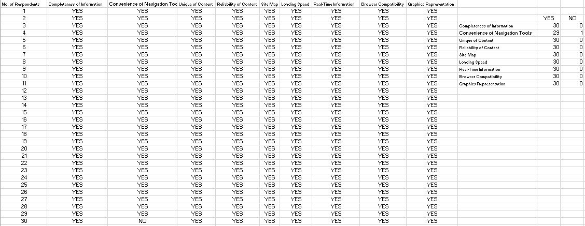
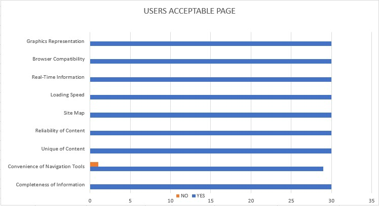

| Home | Product Details | Patent Page | Problems Encountered | Solutions | Phases Page | Users Acceptable Page | About the Founder |


On the Excel, the table shows the reviews of the thirty respondents based on the
Product and the website. The chart below the Excel shows the number of the respondents
regarding on the website and the product. The chart shows that majority of the respondents have
"YES" option on other rubrics and one respondent said "No" based on the chart.